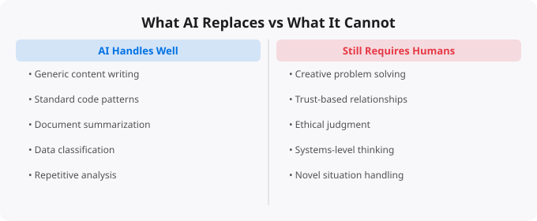

The fear that artificial intelligence will take human jobs is one of the most discussed anxieties in the current era of technological change. News articles regularly predict the end of various professions. Politicians debate legislation to protect workers. And working professionals in knowledge industries wonder whether their skills will still be valuable in five years. The reality, as it almost always is, is more nuanced than the headlines suggest.
AI does not replace jobs wholesale — it automates specific tasks within jobs. This is not a new phenomenon. Every major technology wave has automated specific tasks while shifting human work toward higher-level activities that the technology cannot perform. Spreadsheets automated manual calculation, shifting accountants toward analysis and judgment. Word processors automated typing and formatting, shifting writers toward content and structure. Email automated the physical delivery of messages, shifting communication toward more complex coordination. AI is automating a new category of tasks — specifically, tasks that require pattern recognition and language processing. Content drafting, standard code patterns, document summarization, customer service scripts, basic analysis of structured data — these are the kinds of tasks that AI tools handle well.
There is a reliable pattern in what AI cannot do well. Original creative work — genuinely novel ideas that break existing patterns — remains human. Anyone can ask AI to write a blog post, but the human who has developed genuine expertise, a distinctive perspective, and original insights produces work that AI cannot replicate. Strategic judgment in complex, high-stakes situations with incomplete information remains human. AI can analyze data and generate options, but deciding which option to choose in a situation where the trade-offs are complex and the consequences are significant requires human judgment and accountability. Building trust-based relationships remains human. Clients, colleagues, and partners trust and work with specific people, not with AI tools. The relationship, communication, and interpersonal skills that build professional trust are irreducibly human. Physical and contextual problem-solving in the real world remains human. The plumber fixing an unusual leak, the doctor examining a patient, the electrician troubleshooting a complex wiring problem — these require physical dexterity and real-world contextual judgment that AI cannot replicate.
The more realistic threat is not that AI takes your job directly, but that professionals who use AI effectively will outperform those who do not — producing more, working faster, and delivering higher quality output with the same or less time investment. This creates competitive pressure in job markets. A company that previously needed five content writers might now need three, because the three using AI can produce as much as five did before. A team that previously needed four junior developers might now need two, because each developer with AI assistance is significantly more productive. The people who lose out are the least productive at any given tier, because automation and AI assistance reduces the need for that level of production. The professionals who thrive are those who develop genuine expertise, stay at the leading edge of AI tool usage in their domain, and focus on the high-value activities that AI augments rather than replaces.
The most competitive professionals in any knowledge field over the next decade will combine genuine domain expertise with AI fluency. Domain expertise means deep knowledge of your specific field — the contextual understanding, professional judgment, and accumulated experience that makes your work valuable. This is developed over years and cannot be shortcut. AI fluency means the practical skill of using AI tools effectively — knowing when and how to use them, evaluating their output critically, and integrating them into your workflow productively. Neither alone is sufficient. Deep expertise without AI fluency means slower production and higher cost relative to competitors who leverage AI. AI fluency without domain expertise means impressive-seeming output that lacks the depth and judgment that sophisticated clients and employers value. The combination is what creates durable professional advantage.
If you are concerned about AI's impact on your career, the most productive response is not anxiety — it is action. Start using AI tools in your current work regularly, even imperfectly. Develop fluency through consistent practice. Identify the specific tasks in your role where AI provides the most leverage, and invest time in developing effective AI workflows for those tasks. Simultaneously, invest in deepening your domain expertise. Develop the judgment, relationships, and capabilities that are difficult to replicate. Position yourself as someone who combines deep knowledge with AI capability — that combination is rare and increasingly valuable. The professionals who approach AI as an opportunity rather than a threat, who develop genuine fluency while deepening their human expertise, are the ones who will look back in ten years and recognize that the AI era was an accelerant for their careers, not a disruption to them.
← Back to BlogArtificial intelligence is evolving faster than almost any other technology domain. The specific tools, models, and capabilities that are current today will look different in a year. This makes staying current a genuine challenge — the half-life of specific technical knowledge is short. The strategies that work: follow the primary sources (research blogs from Anthropic, OpenAI, Google DeepMind, Hugging Face) rather than relying on summaries that may be outdated. Focus on underlying principles that transfer — model architecture concepts, evaluation methods, prompt engineering principles — rather than memorizing specific tool interfaces that will change. Build things with current tools to develop practical intuition, even knowing those specific tools will evolve. The professionals who navigate fast-moving fields best are those who can quickly assess new developments, extract the signal from the noise, and rapidly evaluate what is genuinely significant versus what is marketing.
Disclaimer:
This article is written for educational and informational purposes only.
It does not provide financial, legal, investment, or professional advice.
Cloud services, pricing, security, and practices may vary by provider,
region, and use case. Always verify information from official
documentation before making decisions.
The nuance that most headlines miss is the difference between automating tasks and automating jobs. A job is a collection of tasks. AI can automate specific tasks within jobs -- sometimes significant ones -- without automating the job itself. A lawyer's job involves drafting documents, legal research, client communication, strategic advice, and court appearances. AI can assist heavily with document drafting and legal research. But client communication, strategic advice, and court representation still require human lawyers.
McKinsey research found that roughly 30% of work tasks across the economy could be automated with current AI technology. That sounds alarming. But "30% of tasks" does not mean "30% of jobs." Most jobs where 30% of tasks are automatable will see those employees do more valuable work with the time AI saves -- not find themselves replaced.
Software Developer:
Tasks AI can assist: Code completion (40%), Debugging (30%), Documentation (20%)
Tasks remaining human: Architecture decisions, requirements gathering, code review judgment, stakeholder communication
Result: Developer writes more code, spends more time on design
Content Writer:
Tasks AI can assist: Research (50%), First drafts (40%), SEO optimisation (30%)
Tasks remaining human: Editorial judgment, original insight, brand voice, client relationships
Result: Writer produces more content, focuses on quality and strategy
Financial Analyst:
Tasks AI can assist: Data gathering (60%), Report formatting (40%), Chart creation (30%)
Tasks remaining human: Investment judgment, client relationships, regulatory navigation, novel analysis
Result: Analyst covers more companies, focuses on higher-value insightsEvery technology revolution destroys some jobs and creates others. The automobile eliminated horse-drawn carriage jobs but created millions of driving, manufacturing, and maintenance jobs. The internet eliminated travel agents but created social media managers, UX designers, and data scientists. AI is already creating new roles.
Prompt Engineer: Designing effective prompts for AI systems to get consistent, high-quality outputs. Currently paying $100,000-300,000 at major AI companies. AI Trainer: Evaluating AI outputs and providing feedback to improve models. Human judgment at scale. AI Integration Specialist: Helping organisations implement AI tools effectively into existing workflows. AI Safety Researcher: Ensuring AI systems are safe, fair, and aligned with human values -- a growing field with significant demand. Synthetic Data Creator: Generating training data for AI systems.
If you want to be confident about your career in an AI world, focus on developing skills that AI consistently struggles with: Original insight -- synthesising information from diverse sources to form new conclusions. Contextual judgment -- understanding the specific situation, history, and stakeholder dynamics that AI cannot perceive. Accountability -- being responsible for outcomes, not just providing analysis. Trusted relationships -- clients who trust you personally, not just a service. Novel problem solving -- addressing genuinely new challenges without precedent in training data.
Jobs with highly repetitive, rules-based tasks with little variation. Data entry, basic customer service, simple document processing, and highly formulaic content creation face the most pressure. Jobs requiring empathy, physical dexterity in unstructured environments, novel problem-solving, and trusted human relationships face the least.
Probably not dramatically. More useful: learn to use AI tools effectively in your current field. Identify which tasks in your job AI can assist with and use it for those. Develop the skills in your role that AI cannot replicate. People who thrive through AI transitions are usually those who adapt within their field, not those who abandon it entirely.
Currently mixed. In tech, AI engineers command significant premiums. In some fields where AI increased individual productivity, individual salaries have held up while total headcount has grown more slowly. The biggest salary risk is not using AI tools while competitors do -- falling behind on productivity.
Yes. India is one of the fastest-growing tech markets globally. These skills are in high demand across startups, MNCs, and product companies in Bangalore, Hyderabad, Pune, and Mumbai.
Follow official documentation, tech blogs from practitioners, GitHub repositories, and communities like Dev.to, Hashnode, and Reddit. Avoid news that creates urgency without substance.
Official documentation first. Then practical tutorials. Then build real projects. SRJahir Tech articles are written from real production experience — bookmark the series that matches your learning goal.
Consistent daily practice for 3-6 months produces real, usable skills. The key is building projects, not just reading. Every article on SRJahir Tech includes practical examples you can implement today.
Yes. All articles on SRJahir Tech are completely free. No paywalls, no subscriptions. Quality technical education should be accessible to everyone, especially aspiring engineers in India.